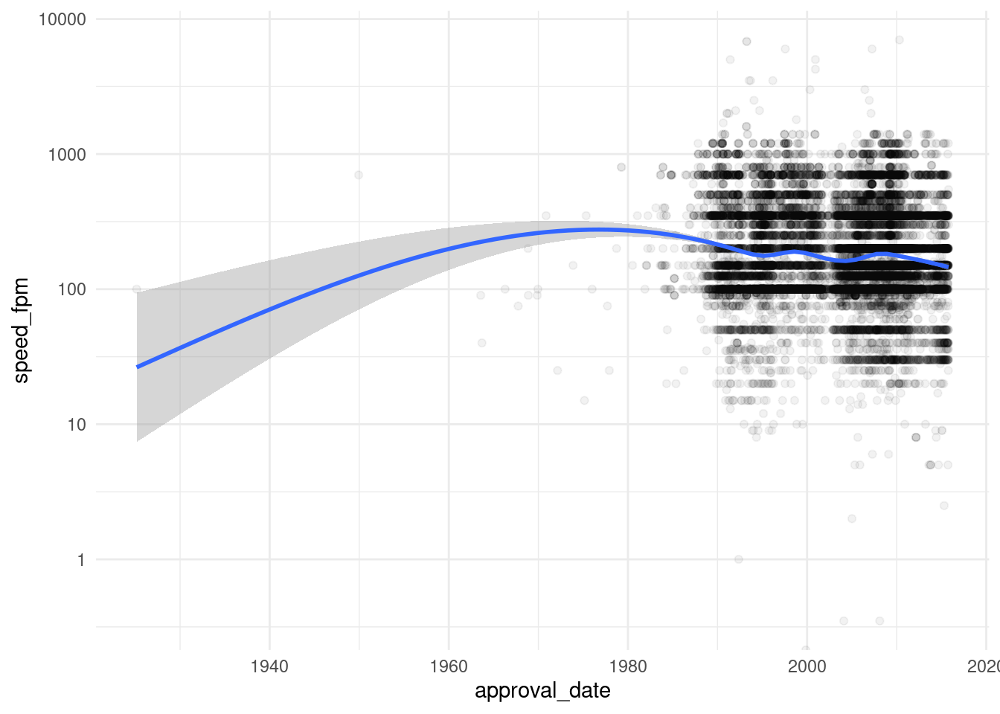
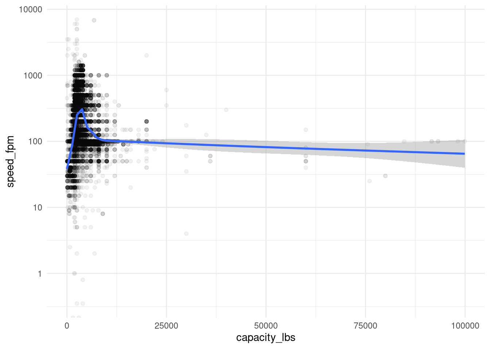
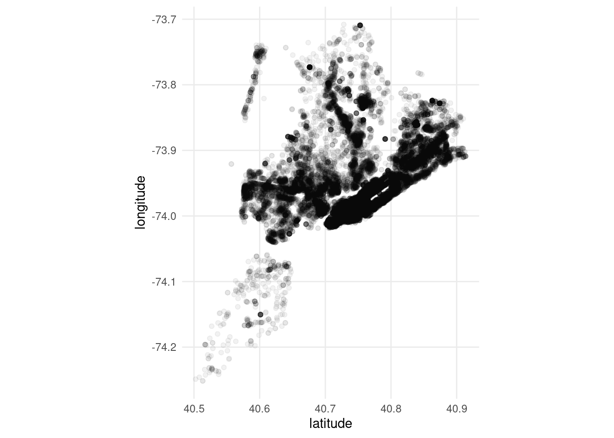

Mike Mahoney
Home
Papers
Presentations
Software citations
Blog
Cool graphs about elevators
Last generated on: 2022-08-10
Author
Mike Mahoney
Published
April 4, 2023
Speed over time

Speed versus capacity

Where in the world did all my elevators go
